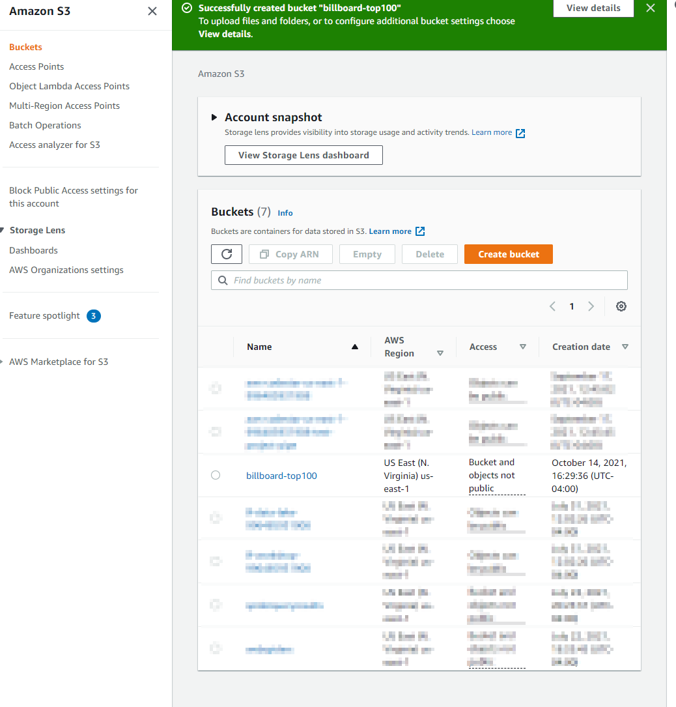
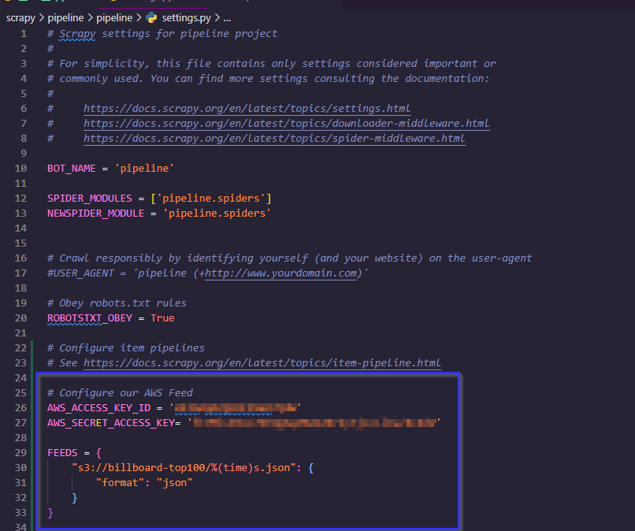
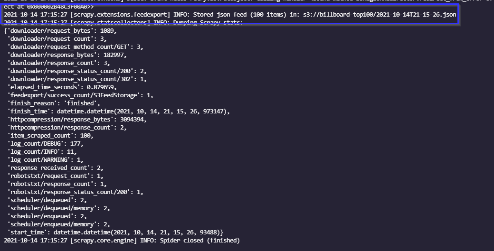
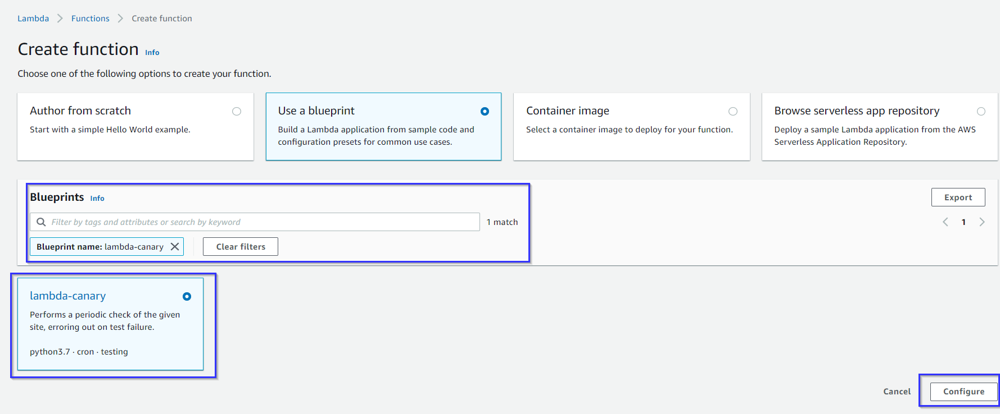
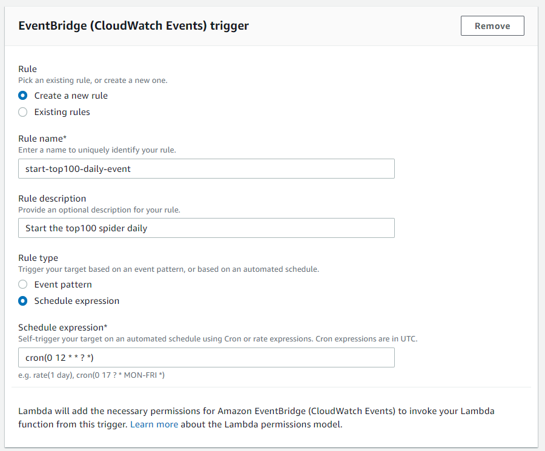
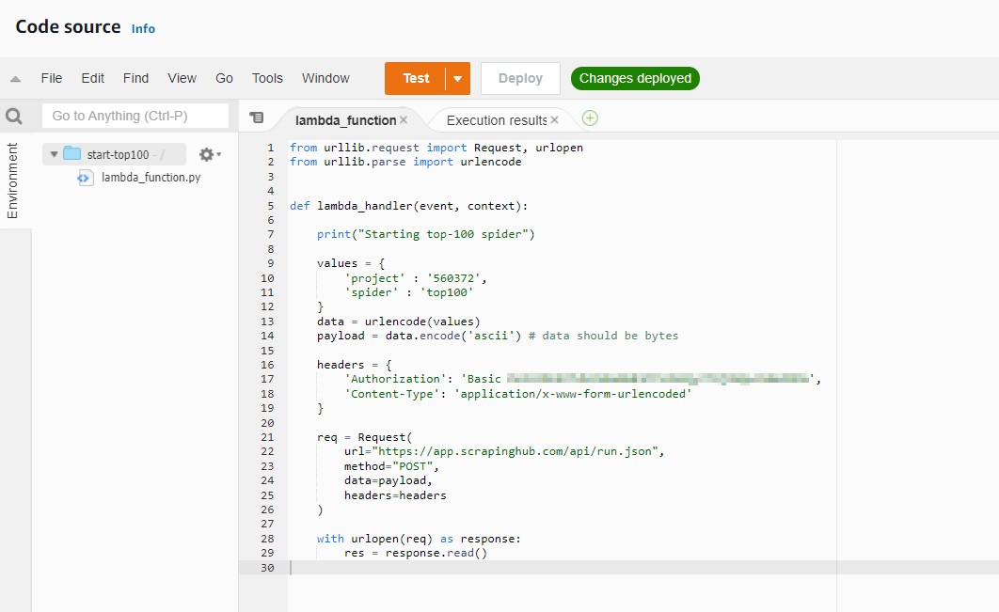

Part 1 - Automation and persisting data
Step 0. Creating an AWS account
First off, if you don't already have an AWS account, you'll need a free one.
Sign up here and follow the instructions on creating an account.
AWS is something worth taking a deep dive on. When deploying apps, be sure to follow any security precautions. This post won't dive too deep into AWS aside from what we need for it. But there is plenty of great resources to learn the ins-and-outs of the comprehensive services they offer.
Step 1. Create our S3 bucket
Once our AWS account is setup, we now have an optional step to create a user account as to not work in our root account. This is recommended as a good rule is to not allow for more permissions than needed using the IAM console. However taking a dive into that would be more than we could cover in one post. I recommend finding some tutorials on IAM and AWS and creating a user account now. However if you like to live on the edge, proceeding with your root account will also work.
Navigate to S3 and the first thing you will see is available buckets. Think of a bucket like a directory that can contain objects (or files). You won't have any at first, but we are going to create one now. Choose "Create Bucket"
Leaving everything at the default values will create a non-public bucket, which is what we want. Feel free to add any tags that may make organization easier if you expand to having more buckets. Once your bucket is created you should see it on the buckets page. I named mine "billboard-top100".
Step 2. Configure project to our AWS account
We need three things here to configure our scrapy project to output into an S3 bucket.
- AWS_ACCESS_KEY_ID
- AWS_SECRET_ACCESS_KEY
- Our S3 path to the bucket we just created
Our S3 path name is simply the bucket name you created prefixed by s3://. So in the example this would be s3://billboard-top100
Now that we've got the 3 values we need to configure our project, we can modify our scrapy project. We need to do 2 things here.
- Modify our settings.py file to point an item feed to our AWS S3 bucket.
- Modify our requirements.txt file to install the botocore library.
-
First lets modify and reinstall our requirements. Our requirements.txt will now look like this.
scrapy==2.5.1
shub==2.13.0
botocore==1.21.61Noting the version numbers here have been added to pin down the current version of each library used.
Then install those to our virtual environment using pip install -r requirements.txt
-
Now we need to modify the settings.py file. This is a file used by the scrapy framework to define custom settings for how we want our spiders to behave on a global level. We are going to add an item feed to tell scrapy where to send our items upon finishing a crawl.
This is where we will need our 3 values. We will add a feed by adding these lines to our settings.
 -
Finally we need our requirement.txt file next the the scrapinghub.yml file and add a the following line to the the scrapinghub.yml
requirements:
file: requirements.txtWorth noting that at the time of writing, scrapy cloud only allows 1.16.14 up to 17.0.0 (non-inclusive).
It's that simple to tell scrapy where to send our output. Now if we run a spider (locally or in the cloud), as long as the botocore library is installed, we can output to S3. Lets test it locally by running scapy crawl top100. To verify, we can check the output and look for the following line just above the output stats.
NOTE: It's a good idea to use the Zyte Consoles settings button and remove these values that we just placed in settings.py. This was for displaying how we would do it, however since this repository is public, I will place them in the console instead as they override settings.py.
Now lets head back to our bucket and check it out. We can see our new file in our bucket. S3 allows for creating events on new objects being inserted as well. So you can take advantage of this and setup any custom process you may want to trigger when objects are created like this.
Now that we have our spider output linked to our S3 bucket, we have a few options to start these automatically on a daily basis. We could use AWS Cloudwatch and Lambda to schedule events and kick it off that way or use the built-in Scrapy Cloud Scheduler.
Since I'm cheap, I won't be using Scrapy Cloud's built in one as that would force us to sign up for paid subscription. So lets hop over to Lambda.
Step 3. Scheduling with AWS Lambda and CloudWatch Events
To get this part started, navigate over to Lambda and create a new function. To make the process easier, choose the blueprint option and search for "canary".
Choose the lambda-canary blueprint as this will automatically configure a scheduled event to kick off the function we're about to create. Once selected, click "Configure".
Next name your function and choose the option for "create a new role with basic Lambda permissions". Scroll down to the EventBridge configuration and input the following.
We named our rule and gave it a description. The part that schedules our function is the cron expression at the bottom. What this is saying is every day at 12, start this event.
cron(minute, hour, day, month, day-of-week, year)So we are saying at the 0th minute of the 12th hour and ANY day of ANY month and ANY day of the week in ANY year (* and ? are wildcards).
For the rest of the fields, we can leave them at their defaults. As we will modify the source code and environment variables next.
Now that we have our lambda function created and timed to a specific point in the day, we need to use the Scrapy API to kick them off when the event triggers. This will require us to visit their API documentation here.
After some digging around the API, we come to the following request that can be executed in lambda to start our job. Our API key for our account is encoded in the Auth header. We can test this function now and verify our spider is started. This will also in turn, place the output in the S3 bucket.
We are now persisting our spider data (for free) into our S3 bucket. We can define events to trigger upon entry or not. In the next part, we will explore how we can consume this data and display it in a nicer manner.